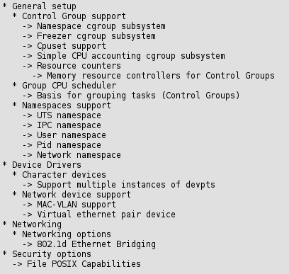
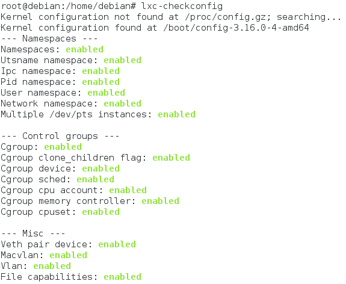
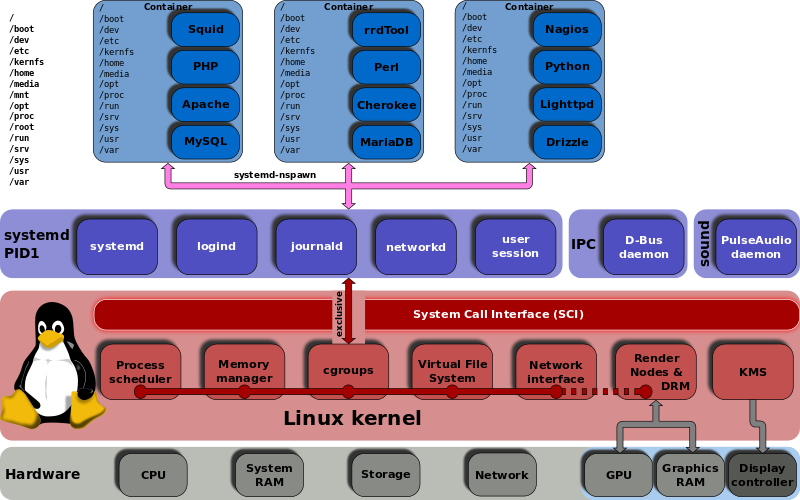

Información general de LXC
- Virtualización a nivel de sistema operativo.
- Licencia: GNU-GPL v2.
- Escrito en: C, python3, shell, lua.
- Desarrollo activo.
- Sistemas soportados: sistemas con nucleo Linux.
- Arquitecturas soportadas: x86, x86-64, IA-64, PowerPC, SPARC, Itanium, ARM.
- Versión estable desde el 12/05/2013
- Web: linuxcontainers.org
Requisitos del kernel

Versión del kernel
Funciona desde la versión >= 2.6.27, completamente desde la versión 2.6.29.
Con lxc-checkConfig vemos información del kernel:

Esquema de LXC

Ventajas de LXC
- Rapido despliegue de vm.
- Ahorro en hardware y energía.
- Ahorro de recursos a no ser virtualización completa.
- Uso de recursos de forma no estatica.
- Adecuado para dividir servicios.
Desventajas de LXC
- Solo para maquinas con nucleo Linux.
- Solo maquinas con OS compatible con el nucleo del anfitrión.
- Problemas de acceso a hardware con muchas vm.
- En caso de rotura todas las vm dependen del mismo hardware.
- Solo para servicios en espacio de usuario.
- Por diseño no se pueden tener servidores en modo kernel.